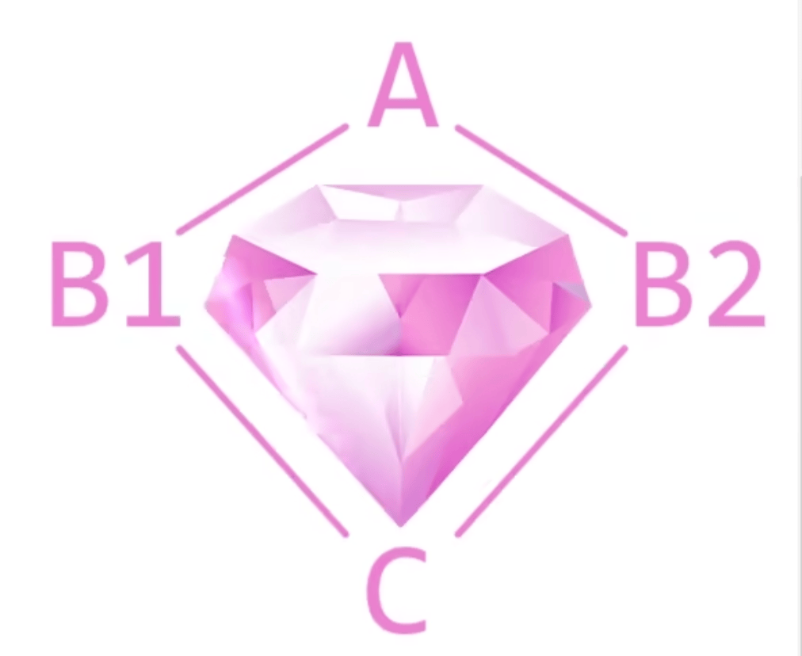

类和对象
类、对象概述
面向对象就是一种代码封装的方法，就是把相关的数据和实现的函数封装到了一起，Python 的对象等于属性加方法，一个对象诞生前首先需要创建一个类 class，然后通过类去创造对象。
类的属性是写在类里面的变量，类的方法是写在类里面的函数。类的三大特定：封装、继承、多态。
注意： 创建类，类的首字母需要大写，一个类可以创建出无数个对象，当一个对象通过类创建出来之后就可以随意的修改该对象的值，同一个类创建的对象不会共享数据，也可以动态的向对象新增一个属性。可以使用dir()函数查看类的属性和方法。
Python # 类的创建
class Test :
a = 1
b = "hello"
def aa ( self ):
print ( 123 )
# 对象的创建
test = Test ()
# 获取对象对应的属性和方法
print ( test . a )
test . aa ()
# 一个类可以创建多个对象
test1 = Test ()
test2 = Test ()
# 创建完成的对象可以修改属性值，以及添加新的属性值
test . a = 100
test . c = 1000
print ( dir ( test )) # ['__class__', '__delattr__', '__dict__', '__dir__', '__doc__', '__eq__', '__format__', '__ge__', '__getattribute__', '__gt__', '__hash__', '__init__', '__init_subclass__', '__le__', '__lt__', '__module__', '__ne__', '__new__', '__reduce__', '__reduce_ex__', '__repr__', '__setattr__', '__sizeof__', '__str__', '__subclasshook__', '__weakref__', 'a', 'aa', 'b', 'c']
print ( dir ( test1 )) # ['__class__', '__delattr__', '__dict__', '__dir__', '__doc__', '__eq__', '__format__', '__ge__', '__getattribute__', '__gt__', '__hash__', '__init__', '__init_subclass__', '__le__', '__lt__', '__module__', '__ne__', '__new__', '__reduce__', '__reduce_ex__', '__repr__', '__setattr__', '__sizeof__', '__str__', '__subclasshook__', '__weakref__', 'a', 'aa', 'b']
类的封装
将类的属性和方法封装在一起，类的方法和函数的区别在于：方法需要使用对象进行访问调用，而函数则可以直接调用。
Python # self
class C :
def test ( self ):
print ( self )
aa = C ()
aa . test () # <__main__.C object at 0x1043a7ac0>
print ( aa ) # <__main__.C object at 0x1043a7ac0>
# 可以发现self其实就是对象本身，python通过调用类的方法，不同对象传入的self不同可以区别不同的对象
Python # 请设计一个 Rectangle 类，该类有 length 和 width 两个属性（分别用于指定长方形的长度和宽度），该类还有 set_length()、set_width()、get_ perimeter() 和 get_area() 四个方法（分别用于设置长方形的长和宽，以及获取长方形的周长和面积）
class Rectangle :
length = None
width = None
def set_length ( self ):
self . length = float ( input ( "请输入矩形的长度：" ))
def set_width ( self ):
self . width = float ( input ( "请输入矩形的宽度：" ))
def get_perimeter ( self ):
if not self . length :
self . set_length ()
if not self . width :
self . set_width ()
return ( self . length + self . width ) * 2
def get_area ( self ):
if not self . length :
self . set_length ()
if not self . width :
self . set_width ()
return self . length * self . width
cc = Rectangle ()
# cc.set_width(10)
# cc.set_length(10)
print ( cc . get_perimeter ())
print ( cc . get_area ())
类的继承
类的继承概述
Python 的类支持继承，可以使用现有类的所有功能，并在无需从新编写代码的情况下对这些功能进行扩展，通过继承创建的新类称为子类，被继承的称为父类、基类或者超类。
注意： 如果子类继承父类，子类存在和父类相同属性或方法，子类会覆盖父类属性或方法。
Python # 定义父类A
class A :
a = 123
def test ( self ):
print ( "类A" )
# 子类继承类C
class B ( A ):
pass
# 使用父类属性和方法
b = B ()
print ( b . a ) # --> 123
b . test () # --> 类A
# 子类存在父类相同属性或方法，会进行覆盖父类属性或方法
class C ( A ):
a = 456
def test ( self ):
print ( "类C" )
# 创建类C对象
c = C ()
print ( c . a ) # 456
c . test () # 类C
类的继承 BIF（内置函数）
isinstance 函数
判断一个对象是否属于某个类。
Python # 定义类A
class A :
a = 123
def test ( self ):
print ( "类C" )
# 定义类B并继承类A
class B ( A ):
pass
# 创建类B对象
b = B ()
# 判断对象b是否属于类B
isinstance ( b , B ) # --> True
# 判断对象b是否属于类A
isinstance ( b , A ) # --> True，b是B的对象，B是A的继承关系，所有同样为True
issubclass 函数
用于检测一个类是否为某个类的子类。
Python # 定义类A
class A :
a = 123
def test ( self ):
print ( "类C" )
# 定义类B并继承类A
class B ( A ):
pass
# 判断类B是否为类A的子类
issubclass ( B , A ) # --> True
# 判断类A是否为类B的子类
issubclass ( A , B ) # --> False
类的多重继承
Python 的类支持多重继承，一个子类可以继承多个父类。
Python # 类A
class A :
a = 123
def test ( self ):
print ( "类A" )
# 类B
class B :
a = 456
b = 789
def test ( self ):
print ( "类B" )
# 多重继承，创建类C同时继承类A和类B
class C ( A , B ):
pass
# 创建类C对象
c = C ()
# 使用类C属性和方法
# 当继承的多个类存在相同属性或方法，默认从左到右顺序，左边的元素或方法高于右侧，当左边没有才会去右边找
print ( c . a ) # a属性类A和类B都有，默认使用左边类A --> 123
print ( c . b ) # b属性类A没有类B存在，使用右边类B --> 789
c . test () # 方法同样相同使用左边类的方法 --> 类A
# 多重继承同样遵循继承原理，默认本身的方法和属性会覆盖父类的方法和属性
class D ( A , B ):
a = 999
def test ( self ):
print ( "类D" )
# 创建类D对象
d = D ()
# 使用属性和方法
print ( d . a ) # --> 999
d . test () # --> 类D
类的组合（不同于继承）
将多个类组合在一起，形成一个新的类，不同于继承。
假如我们需要定义的几个类，拥有一些共同的属性和方法，那么我们应该考虑使用继承，讲这些共有的属性和方法设计在父类中，而特殊的属性和方法设计在子类中，这样一来解决了代码冗余的问题，二来提高了代码的可扩展性（比如定义动物为父类，猫、狗、鸡、鸭、鹅则可以定义为子类）。
假如我们需要定义的几个类之间并没有从属关系，而是同级，那么就应该考虑使用组合（比如人的手、脚、嘴巴；花园里的花、草、猫、狗）。
使用类的组合，定义的方法需要使用对应的属性同样需要使用 self 参数，这个参数实现的功能为绑定，将实例对象和类进行绑定，实例对象有很多，它共享类的方法，当调用实例对象时，此时就需要 self 参数进行区分不同的实例对象，实例对象的方法可以共享，但是每个实例对象的属性仅对本对象使用。
Python # 定义类A
class A :
a = 1
def aa ( self ):
print ( "类A" )
# 定义类B
class B :
b = 2
def bb ( self ):
print ( "类B" )
# 定义类C
class C :
c = 3
def cc ( self ):
print ( "类C" )
# 定义类D将类A，B，C组合放入类D
class D :
a = A ()
b = B ()
c = C ()
def dd ( self ):
self . a . aa ()
self . b . bb ()
self . c . cc ()
# 创建类D对象d
d = D ()
# 使用类D组合获取的属性和方法
print ( d . a . a ) # --> 1
print ( d . b . b ) # --> 2
print ( d . c . c ) # --> 3
d . dd () # --> 类A 类B 类C
查看类的属性
可以使用内省的方法对类的属性进行查看，使用 __dict__ 来对类属性的查看，如果类的对象没有自己的属性，它默认拥有类的所有属性，此时如果修改类的属性的值，没有自己属性的对象对应的属性值也会发生改变。
Python # 定义类A
class A :
pass
# 通过类A创建对象a
a = A ()
# 通过类A创建对象b
b = A ()
# 分别添加属性值
a . x = 100
a . y = 150
b . x = 200
# 分别查看属性值，使用__dict__方法以字典的形式返回
print ( a . __dict__ ) # --> {'x': 100, 'y': 150}
print ( b . __dict__ ) # --> {'x': 200}
# 通过类里的方法设置对象自己的属性
# 定义类B
class B :
test = None
def test_func ( self , i ):
self . test = i
# 通过类B创建对象a，b
a = B ()
b = B ()
# 通过对象的方法设置自己的属性
a . test_func ( 200 )
b . test_func ( 300 )
print ( a . __dict__ ) # {'test': 200}
print ( b . __dict__ ) # {'test': 300}
类的高阶用法（充当字典使用）
Python # 定义最小的类
class A :
pass
# 通过类A创建对象a
a = A ()
# 通过类的属性充当字典
a . x = 123
a . y = "hello"
a . z = [ 1 , 2 , 3 ]
print ( a . x )
print ( a . y )
print ( a . z )
Python ## 例一：
# 类中属性存在容器，如果对象不添加自己的容器，不同的对象则共同使用类中的容器
# 创建存在容器属性的类
class A :
a = []
def aa ( self , x ):
self . a . append ( x )
# 定义对象a，b
a = A ()
b = A ()
# 分别进行添加容器元素
a . aa ( 100 )
b . aa ( 100 )
# 可以看到其实访问的是同一个容器，容器指向同一个内存地址
print ( a . a ) # [100, 100]
print ( b . a ) # [100, 100]
# 如果想要不同对象使用不同容器，则需要在对象中新建属于自己的容器
## 例二：
# 类中定义的函数类型为：function，而通过类创建的对象使用的则是方法类型为：method
# 创建类A
class A :
x = 100
def aa ( self ):
print ( "111" )
# 通过类A创建对象a
a = A ()
# 可以方法对应的类型一个为：function一个为：method
print ( type ( a . aa )) # <class 'function'>
print ( type ( A . aa )) # <class 'method'>
构造函数
构造函数 __init__()，只需要在类中定义 __init__() 方法就可以在实例化对象的同时实现个性化定制，
Python # 定义包含构造函数的类A
class A :
def __init__ ( self , x , y ):
self . x = x
self . y = y
def add ( self ):
return self . x + self . y
def mul ( self ):
return self . x * self . y
# 通过类A创建对象a
a = A ( 2 , 4 )
print ( a . add ()) # 6
print ( a . mul ()) # 8
重写
当类的继承，如果对父类的某个方法或属性不满意，可以进行覆盖方法或者重写属性，这种行为就叫做重写。
Python # 创建父类A，包含构造函数__init__
class A :
def __init__ ( self , x , y ):
self . x = x
self . y = y
def add ( self ):
return self . x + self . y
def mul ( self ):
return self . x * self . y
# 创建A的子类B，并对子类B进行重写
class B ( A ):
def __init__ ( self , x , y , z ):
# 此时可以不用再写self.x = x, self.y = y,直接使用A.__init__(self, x, y)进行等价
A . __init__ ( self , x , y )
self . z = z
def add ( self ):
# 同样直接使用A类的方法进行代替
return A . add ( self ) + self . z
def mul ( self ):
# 同样直接使用A类的方法进行代替
return A . mul ( self ) * self . z
# 可以发现已经重写完成
b = B ( 1 , 2 , 3 )
print ( b . add ())
print ( b . mul ())
钻石继承
通过 1.3.8 的重写，直接通过类名访问类里面的方法的做法称为调用未绑定的父类方法，这种做法容易产生钻石继承。

Python # 钻石继承
# 定义父类A，包含构造函数
class A :
def __init__ ( self ):
print ( "这个是类A" )
# 定义A的子类B同样包含构造函数
class B1 ( A ):
def __init__ ( self ):
A . __init__ ( self )
print ( "这个是类B1" )
# 定义A的子类C同样包含构造函数
class B2 ( A ):
def __init__ ( self ):
A . __init__ ( self )
print ( "这个是类B2" )
# 定义同时继承B，C的类D包含构造函数
class C ( B1 , B2 ):
def __init__ ( self ):
B1 . __init__ ( self )
B2 . __init__ ( self )
print ( "这个是类C" )
# 这样就组成了钻石继承，输出发现打印了两个类A，这是由于类D继承与类B和类C，类B1和类B2都继承类A，所以执行了两次类A
c = C ()
# 这个是类A
# 这个是类B1
# 这个是类A
# 这个是类B2
# 这个是类C
可以通过 super() 函数避免这种钻石继承， super() 可以在父类中搜索指定的方法并自动绑定 self 参数。
Python # 钻石继承的避免使用super()函数
# 定义父类A，包含构造函数
class A :
def __init__ ( self ):
print ( "这个是类A" )
# 定义A的子类B同样包含构造函数
class B1 ( A ):
def __init__ ( self ):
super () . __init__ ()
print ( "这个是类B1" )
# 定义A的子类C同样包含构造函数
class B2 ( A ):
def __init__ ( self ):
super () . __init__ ()
print ( "这个是类B2" )
# 定义同时继承B，C的类D包含构造函数
class C ( B1 , B2 ):
def __init__ ( self ):
super () . __init__ ()
print ( "这个是类C" )
# 可以发现成功避免了钻石继承
c = C ()
# 这个是类A
# 这个是类B2
# 这个是类B1
# 这个是类C
MRO 顺序
MRO 顺序：如果出现同名的属性或方法，Python 会有一个明确的查找覆盖顺序，这个顺序就叫做 MRO 顺序，翻译过来就叫做方法解析顺序，其中函数super()遵循的就是 MRO 顺序。
Python # 钻石继承
# 定义父类A，包含构造函数
class A :
def __init__ ( self ):
print ( "这个是类A" )
# 定义A的子类B同样包含构造函数
class B1 ( A ):
def __init__ ( self ):
super () . __init__ ()
print ( "这个是类B1" )
# 定义A的子类C同样包含构造函数
class B2 ( A ):
def __init__ ( self ):
super () . __init__ ()
print ( "这个是类B2" )
# 定义同时继承B，C的类D包含构造函数
class C ( B1 , B2 ):
def __init__ ( self ):
super () . __init__ ()
print ( "这个是类C" )
# 查看类的MRO顺序
# 方法一，其中<class 'object'>是默认继承属性，不管有没有继承关系默认都存在
C . mro () # [<class '__main__.C'>, <class '__main__.B1'>, <class '__main__.B2'>, <class '__main__.A'>, <class 'object'>]
# 方法二
C . __mro__ # [<class '__main__.C'>, <class '__main__.B1'>, <class '__main__.B2'>, <class '__main__.A'>, <class 'object'>]
注意： MRO 顺序遵循从左到右规则
Python class A :
pass
class B1 ( A ):
pass
class B2 ( A ):
pass
class C ( B1 , B2 ):
pass
print ( C . mro ()) # [<class '__main__.C'>, <class '__main__.B1'>, <class '__main__.B2'>, <class '__main__.A'>, <class 'object'>]
# 可以发现顺序： C->B1->B2->A->object，完全遵循class C(B1, B2)
# 修改重写类C
class C ( B2 , B1 ):
pass
print ( C . mro ()) # [<class '__main__.C'>, <class '__main__.B2'>, <class '__main__.B1'>, <class '__main__.A'>, <class 'object'>]
# 可以发现顺序：C->B2->B1->object，完全遵循class C(B2, B1)
注意： 如果使用 super() 在父类中查找方法，则需要考虑 MRO 规则，从左到右，每条都要添加 super() 不然会无法实现继承效果。
Python # 使用错误的super()
class A :
def __init__ ( self ):
print ( "这是类A" )
class B :
def __init__ ( self ):
print ( "这是类B" )
class C ( A ):
def __init__ ( self ):
super () . __init__ ()
print ( "这是类C" )
class D ( B ):
def __init__ ( self ):
super () . __init__ ()
print ( "这是类D" )
class E ( C , D ):
def __init__ ( self ):
super () . __init__ ()
print ( "这是类E" )
# 可以发现打印效果并不是需要实现的效果
e = E ()
# 这是类A
# 这是类C
# 这是类E
# 分析执行继承顺序(根据MRO)：[<class '__main__.E'>, <class '__main__.C'>, <class '__main__.A'>, <class '__main__.D'>, <class '__main__.B'>, <class 'object'>]
# 可以发现顺序是：E->C->A->D->B->object
# 但是在类A中没有super()所有在类A就断开了继承，所以只打印了类A类C和类E
# 只需要在类A添加super()即可实现正确继承
# 使用正确的super()
class A :
def __init__ ( self ):
super () . __init__ ()
print ( "这是类A" )
class B :
def __init__ ( self ):
print ( "这是类B" )
class C ( A ):
def __init__ ( self ):
super () . __init__ ()
print ( "这是类C" )
class D ( B ):
def __init__ ( self ):
super () . __init__ ()
print ( "这是类D" )
class E ( C , D ):
def __init__ ( self ):
super () . __init__ ()
print ( "这是类E" )
# 执行正确
e = E ()
# 这是类B
# 这是类D
# 这是类A
# 这是类C
# 这是类E
# 当然对于这种多个继承关系，直接使用方法名会更加简单
# 如果多重继承需要传递参数，参数也要一一对应
# 例如：
class A :
def __init__ ( self , arg ):
super () . __init__ ( arg )
print ( "FishA" )
class B :
def __init__ ( self , arg ):
# 可以不要这个，因为这个是最后继承，下一个是默认的object
super () . __init__ ()
print ( "FishB" )
class C ( A ):
def __init__ ( self , arg ):
super () . __init__ ( arg )
print ( "FishC" )
class D ( B ):
def __init__ ( self , arg ):
super () . __init__ ( arg )
print ( "FishD" )
class E ( C , D ):
def __init__ ( self , arg ):
super () . __init__ ( arg )
print ( "FishE" )
e = E ( 520 )
Mixin 类继承混入
利用编程语言已经的特性，针对面向对象开发中反复出现的问题而设计出来的解决方案。将学过的语法组合起来，达到更好的效果，可以将 Mixin 类理解为扩展插件，它不同于父类，和需要关联的类没有直接联系。
Python class Displayer :
def displayer ( self , text ):
print ( text )
class Logmixin :
def log ( self , text , file_name = "log.txt" ):
with open ( file_name , "a" ) as f :
f . write ( text )
def displayer ( self , text ):
super () . displayer ( text )
self . log ( text )
class Mysubclass ( Logmixin , Displayer ):
def log ( self , text ):
super () . log ( text , file_name = "logs.txt" )
mysubclass = Mysubclass ()
mysubclass . displayer ( "This is test" )
类的多态
类的多态概述
指同一个运算符、函数或对象在不同的环境下具有不同的效果。比如加号乘法还有 len() 函数等等，都是具有多态特性，类的多态是以从写的方式实现。
Python # 示例
# 定义类A
class A :
def __init__ ( self , a ):
self . a = a
def aa ( self ):
print ( f "这是 { self . a } " )
# 定义类B
class B :
def __init__ ( self , b ):
self . b = b
def aa ( self ):
print ( f "这是 { self . b } " )
# 定义函数abc
def abc ( test ):
test . aa ()
# 通过类A B创建对象c1 c2
c1 = A ( "aaaaa" )
c2 = B ( "bbbbb" )
# 可以发现使用相同的函数abc输入不同对象执行不同的结果就是多态
abc ( c1 ) # --> aaaaa
abc ( c2 ) # --> bbbbb
鸭子类型
类的多态不关心本身到底是不是某种类型，只要满足需要的参数就可以实现多态。
Python # 根据1.4.1示例，继续定义其他类只要满足有对应的aa属性同样可以执行
# 定义函数abc
def abc ( test ):
test . aa ()
# 继续定义类C
class C :
def __init__ ( self , x , y ):
self . x = x
self . y = y
def aa ( self ):
print ( self . x + self . y )
# 即使和1.4.1类不同参数也不同，但同样可以使用abc函数执行类的aa方法，这个就是鸭子类型
c3 = C ( 12 , 23 )
abc ( c3 ) # 35
2026年2月24日
2026年2月10日
GitHub